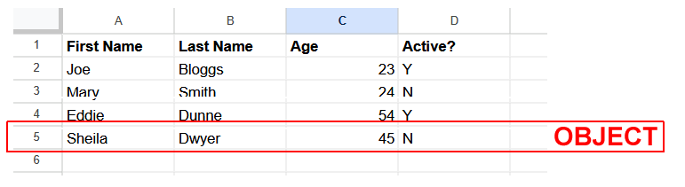
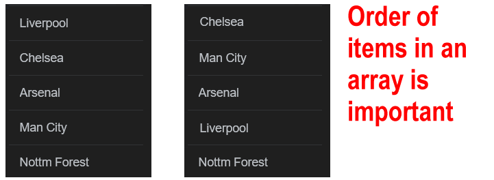
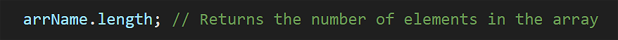

Learning Goals
At the end of this Tutorial, you will be able to:
- Create and populate an array with square brackets [] notation.
- Use the .length method to find the number of elements in an array.
- Use array indexes to access individual elements in an array.
- Test for an array with the Array.IsArray() method.
- Convert an entire array to a string with the .toString method.
- Destructure individual elements of an array to variables.
Download a new workfile on your computer as described at the link below.
Storing spreadsheet-type data in arrays
In the previous Working with objects Tutorial, you learnt that a JavaScript object can be used to store the related data in a single row of a spreadsheet such as shown below.
But what about all the rows of a spreadsheet? How can they be stored in JavaScript? The answer is: in an array.
You can think of an array as a list of things. The things (usually called items) in an array could be objects. But they can also be simple variables such as strings or numbers.
In an array, the order in which the items are stored is important. For this reason, an array is more propertly defined as an ordered list of items.
Naming your arrays
Object names follow the usual JavaScript rules: they are case-sensitive and cannot contain spaces or the dash (-) character. Here are two tips:
- Begin array names with arr, such as arrStudents and arrEmployees.
- Use plural nouns for array names, such as arrProducts rather than arrProduct and arrUsers rather than arrUser.
Creating an array with [] notation
You can create an array with an array name and pair of square brackets []. This is called literal notation.
Copy the following code to your arrays-intro.html workfile. It should not throw any errors.
// Declaring and populating arrays in one step
const arrUserFirstNames = ["Camille","Emma","Gabriel","Romy"];
const arrPrices = [11.99, 24.50, 34.25, 49.99];
const arrCars = ["Volvo", "Citreon", "BMW", "Opel", "Peugeot", "Ford"];It is better to use const rather than let when creating arrays. This does not prevent your code from modifying elements in an array later as needed. Array elements are always mutable.
But it does prevent the array from being accidentally overwritten by another another array (or variable) with the same name that might exist elsewhere in the same scope.
Individual array elements are separated by commas and, for extra readability, with a single space. Strings are typically wrapped with double "" rather than single quotes ''.
Also for extra readability, arrays are sometimes written with each element on a separate line. Copy the code below to your workfile.
// Declaring an array with elements on separate lines and a trailing comma
const arrUserIDs = [
4032,
5229,
1234,
6317,
];As you can see above, there is a ‘trailing comma’ , after the final element 6317. Developers sometimes add an optional trailing comma to make it easier to insert/remove elements later.
In JavaScript, elements in an array need not be the same data type. But it is not recommended to mix multiple data types in the same array.
Arrays and index values
Each array element has an identifying integer (whole number) known as an index. Indexes begin at zero and the number is written inside square brackets [].

For example, an array with four elements has the following indexes: [0], [1], [2] and [3]. JavaScript arrays are said to be zero-indexed.
In this respect, elements in an array are similar to characters in a string variable.
Add the following code to your arrays-intro.html workfile to output elements from the three arrays, as identified by their index position.
// === Outputting array elements by index position ===
// Outputting the first element from an array
console.log(`First element of arrUserFirstNames array: ${arrUserFirstNames[0]}`);
// Outputting the second element from an array
console.log(`First element of arrPrices array: ${arrPrices[1]}`);
// Outputting the third element from an array
console.log(`First element of arrCars array: ${arrCars[2]}`);
// Outputting the fourth element from an array
console.log(`First element of arrUserIDs array: ${arrUserIDs[3]}`);The .length property of an array
Every array has a .length property that reveals the number of elements in the array. The syntax is as follows.
Here is some sample code to copy.
// === Array length property ===
console.log(`Number of elements in arrUserFirstNames: ${arrUserFirstNames.length}`);
// 4
console.log(`Number of elements in arrPrices: ${arrPrices.length}`);
// 4Remember: the length of an array is always one number greater than the array's highest index number.
We can use this to access the last element in an array - the element with the highest index number. See below.
// === Accessing last element in array ===
console.log(`Last element of arrCars array: ${arrCars[arrCars.length-1]}`);
// Ford
console.log(`Last element of arrStudentIDs array: ${arrUserIDs[arrUserIDs.length-1]}`);
// 6317Arrays and the typeof operator
Arrays in JavaScript are a special type of object. The typeof operator when applied an array will return object.
This is same value that is returned when typeof is applied to a null variable. See below.
// === Using typeof with a null variable and arrays ===
let someVar = null;
console.log(`Type of someVar: ${typeof someVar}`);
// Outputs object
console.log(`Type of arrUserFirstNames: ${typeof arrUserFirstNames}`);
// Also outputs object
console.log(`Type of arrPrices: ${typeof arrPrices}`);
// Also outputs objectTesting with the Array.IsArray method
To check that some item in your code is actually an array, you can use the Array.isArray() method. You pass the item name to the method as an argument.
This returns a boolean true if the item is an array and false otherwise.
Test the code below runs correctly.
// === Testing for an array ===
// Check if arrCars is an array
if (Array.isArray(arrCars)) {
console.log("arrCars is an array.");
} else {
console.log("arrCars is not an array.");
}
// Check if someVar is an array
if (Array.isArray(someVar)) {
console.log("someVar is an array.");
} else {
console.log("someVar is not an array.");
}From array elements to variables
JavaScript offers ways of extracting all or only selected elements of an array to variables.
Extracting all array elements to a string
Use the .toString method to extract all the elements of an array to a string variable. See the example below.
// === Extracting all array elements to a string ===
const arrFruits = ["Banana", "Orange", "Lemon", "Apple", "Mango"];
const strFruits = arrFruits.toString();
// Banana,Orange,Lemon,Apple,Mango
console.log(`Array elements as string variable: ${strFruits}`);In the string output, JavaScript inserts a comma between each array element.
Your original arrFruits array is unaffected.
Destructuring single array elements to variables
Sometimes, you will want to extract only one or a few elements of an array to a variable.
You could do this:
// === Extracting single array elements to variables ===
// Creating new variables and assigning array elements to them
// The array elements are selected by index value
let strFruit_0 = arrFruits[0];
let strFruit_1 = arrFruits[1];
let strFruit_4 = arrFruits[4];
console.log(`Array element at position [0]: ${strFruit_0}`);
console.log(`Array element at position [1]: ${strFruit_1}`);
console.log(`Array element at position [4]: ${strFruit_4}`);A more modern option is to use array destructuring. This enables array elements to be ‘unpacked’ in a single line of code.
With array destructuring, your code can be simplified to:
// === Unpacking elements with array destructering ===
let [strFruitNew_0, strFruitNew_1, strFruitNew_2] = arrFruits;
console.log(`Array element at position [0]: ${strFruitNew_0}`);
console.log(`Array element at position [1]: ${strFruitNew_1}`);
console.log(`Array element at position [2]: ${strFruitNew_2}`);Note that the variables such as strFruitNew_0 are declared automatically as part of the array destructuring code.
You can skip elements in the array as follows:
// === Skipping an array element while destructuring ===
let [firstFruit, , thirdFruit] = arrFruits;
console.log(`Array element at position [0]: ${firstFruit}`);
console.log(`Array element at position [2]: ${thirdFruit}`);Creating an empty array
There is one situation where you might use let rather const when declaring an array. That is when you do not yet know what values will be stored in the array.
When you need to first create an empty array and populate it later with values, you could do the following:
// === Creating an empty array to populate later ===
// Create array without elements
let arrUserNames = [];
// Populate empty array
arrUserNames = ["Camille", "Emma", "Gabriel", "Romy"];
console.log(`Array elements: ${arrUserNames}`);
Lopping through an array
Often, you will want to perform the same operation on all the items in an array - such as displaying their values.
In modern JavaScript, the preferred wy of looping through an array is to use the forEach() method. See the example below.
// === Looping through array values ===
// Looping through the arrUserFirstNames array
numbers.forEach(userFirstName => {
console.log(userFirstName);
});
// Looping through the arrPrices array
arrPrices.forEach(price => {
console.log(price);
});
// looping through the arrCars array
arrCars.forEach(car => {
console.log(car);
});In the above examples, the variables userFirstName, price and car are parameters that represent the current array item being processed. They are typically named in a single form of the array name. The => operator is called a fat arrow symbol.
Try it yourself
In your workfile...
---
Create an array called arrColors with five different colour names. Then, in the console, output:
- The first colour
- Print the last colour using the array's length
- Print the total number of colours in the array
---
Create an array called arrMonths with the first three months of the year. Then:
- Use destructuring to assign each month to a separate variable
- Try destructuring with skipping the second month
- Output the extracted values to the console
More learning resources
Tutorial Quiz
Tutorial Podcast
Sample AI prompts
Create a detailed explanation of array indexing in JavaScript. Explain why arrays are zero-indexed, demonstrate common indexing mistakes beginners make, and show different ways to access array elements including negative indexing. Use visualizations or analogies to help explain the concept."Walk through the process of array destructuring step by step. Compare it with traditional ways of accessing array elements, and demonstrate scenarios where destructuring makes code more elegant. Include examples of skipping elements and using rest parameters.